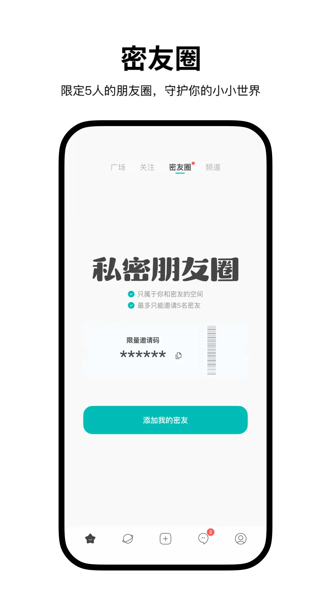

Simple 避坑指南：这款轻量社交应用看着简单，其实有几个容易踩的点
用过半年的老用户复盘四个常见翻车场景——动态看不见真不是限流、消息重复怎么救、聊天记录导出的付费逻辑、清缓存别碰草稿。看完少走弯路。
说实话，第一次在Simple官网上了解到这款应用时，我以为这就是个没什么可注意的轻量社交应用。界面干净、没有红点轰炸、广场安安静静，给人的第一印象是「省心」。结果用了大半年，大大小小的坑踩了好几个，有的甚至差点让我把这个应用删了。
这篇不是功能介绍——你打开应用自己就能摸清楚那些。我想说的是那些你用了一段时间才会撞上的、让人皱眉的小问题，以及它们到底该怎么解决。

第一个坑：「为什么我的动态没人看」——八成不是限流
这是我最早踩的坑。发了一条动态，过了半小时看还是零互动，心里咯噔一下：「我是不是被限流了？」
症状
动态发出去了，但广场上刷不到，或者只有寥寥几个人能看到。自己点开检查没问题，就是曝光量异常低。
原因
排查下来，我遇到的原因有三个，前两个全是自己手滑：
可见范围选成了「仅主页」或「仅自己」。 发布界面底部有个可见范围选择，默认可能不是广场全公开。发的时候没注意，选了仅主页，那这条动态就只会出现在自己的主页时间线上，别人当然刷不到。
开了 24 小时自动归档。 这个功能我是后来才发现的——发出去的动态，到了第二天自动变成仅自己可见。不是被限流，是功能按时执行了。我以为是内容被平台吞了，郁闷了好几天。
发到了密友圈而不是广场。 Simple 有个密友圈功能，最多五个人。如果切换到密友圈频道发帖，这条动态就只有圈子里的人能看到。新手最容易犯的错就是发帖前没看清楚当前在哪个频道。

解法
先自己排查设置，别一上来就怪平台限流。打开那条发出去的动态，点编辑看看可见范围——多数情况改回来就好。24 小时归档在设置里可以关掉，关掉后动态就不会自动消失了。至于密友圈发布，发帖前瞄一眼顶部的频道标签，确认在广场再发。
我之前因为这个坑纠结了好几天，后来才发现完全是自己的操作问题。去Simple文档翻了一下才确认，它的产品取向就是反流量焦虑的，本来就不搞点赞体系，也不承诺曝光量。想通这一点，所谓的「限流焦虑」自己就散了。
第二个坑：聊天消息的各种小毛刺
Simple 的聊天功能整体好用，但确实有一些偶发的小问题。不是天天遇到，但撞上一次就够烦人的。
消息重复显示
有一次我和朋友聊得正嗨，突然看到同一条消息在屏幕上出现了三四个副本。第一反应是手机卡了，杀进程重开，重复的副本才消失。
后来发现这是展示层的 bug，不是真的发了多条。让对方确认一下她实际收到几条——通常只是本地显示的问题。下拉刷新或者杀掉应用重开，大概率能收敛。如果持续复现，截图留证然后走申诉渠道反馈。
消息引用选不中
想引用某条消息回复，长按半天就是弹不出引用选项。
这里有个小技巧：先确认是「长按」而不是「轻点」，长按的时长和位置都要稳。而且引用功能只对纯文本消息生效，图片、语音这类不一定支持。实在不行就直接回复并 @ 对方昵称，效果差不多。
聊天记录搜不到
聊多了之后想翻之前说过的某句话，结果发现搜索功能不太好用。目前群聊已支持搜索，但单聊的搜索能力有限——这是已知现状，不是你没找到。
养成随手收藏或截图自存的习惯吧，别太依赖搜索。我自己的做法是重要信息直接复制进备忘录，零成本还保险。
应用突然打不开或卡死
这个偶尔会遇到。先杀进程重开看看能不能复现。如果是持续崩溃，清理后台和缓存——但注意，清缓存之前一定要确认不会误删本地草稿，草稿是存在本地的，清缓存可能会把它们一起清掉。
还要检查是不是最新版本。旧版本的已知 bug 常在新版里修复，更新日志里「修复了几个已知 bug」几乎是每次更新的固定节目。
发送失败
消息发不出去时，先排除网络问题——切换 Wi-Fi 或流量试试。然后检查内容是不是触发了审核拦截，被拦的消息会有明确提示。排除这两点还发不出去，大概率是服务端波动，稍等一会儿再试就行。
第三个坑：聊天记录导出要花钱
这个坑我差点踩中。有个认识了快一年的朋友说要注销账号，我想把我们的聊天记录导出来留存，结果发现导出功能是付费的。
症状
在应用里找不到免费的导出入口，点导出就跳到内购页面。
原因
Simple 的聊天记录在应用内自动保存，查看是免费的。但导出到应用外属于付费能力，要通过内购解锁。这个设计的逻辑倒也说得通——应用本身免费还无广告，安装包从官方下载拿，总得有个收入来源，导出属于「谁用谁付费」的低争议收费点。
而且注销账号之后记录是不可找回的，这个一定要提前知道。如果和密友有长年对话想永久留存，花点钱导出是值得的。如果只是偶尔想翻一翻，应用内查看已经够了，没必要买。
免费替代方案也有——重要内容随手截图，或者把想留的文字复制进自己的备忘录。最笨但最保险，零成本。
第四个坑：清缓存不小心丢了草稿
这个坑我真的踩了。某天手机内存告急，习惯性地清了一波应用缓存，回来发现写了一半的草稿没了。
症状
草稿箱里空了，之前写了一半的动态全没了。
原因
Simple 的草稿存在本地，清理缓存时如果勾了应用数据或者清得太彻底，草稿会一起被干掉。我当时没注意，直接一键清理，后悔了好一阵。
解法
养成习惯：清缓存之前先打开草稿箱看一眼，有重要的草稿就先发出去或者复制到别的地方备份。或者干脆别用「一键清理」这种功能，手动选择性地清。
防坑清单
用了这么久，我总结了几条能帮你快速避开大多数问题的要点，每次上手前过一遍：
- 发帖前检查可见范围和频道——这个动作两秒钟，能避免 80% 的「为什么没人看」的自我怀疑
- 24 小时归档记得关掉——除非你本来就想要动态自动消失
- 清缓存前先瞄一眼草稿箱——别像我一样写完的东西说没就没
- 消息发不出去先查网络再查审核——别一着急就重发，可能反而制造重复
- 聊天记录想留存，提前规划导出——注销账号后真的找不回来，别等
Simple 是个有自己想法的应用。它不追流量，不搞社交压力，产品取向很明确。知道了这些坑之后，它其实相当省心——大部分问题都不是产品 bug，而是我没摸清楚它的设计逻辑。用对了方式，这座小岛上的社交体验反而比那些大平台舒服得多。
这套轻量社交的资料我同步维护在三个代码仓库里——想直接看源码的去GitHub，国内访问不方便的可以看Gitee，另外在GitCode也有一份完整备份。